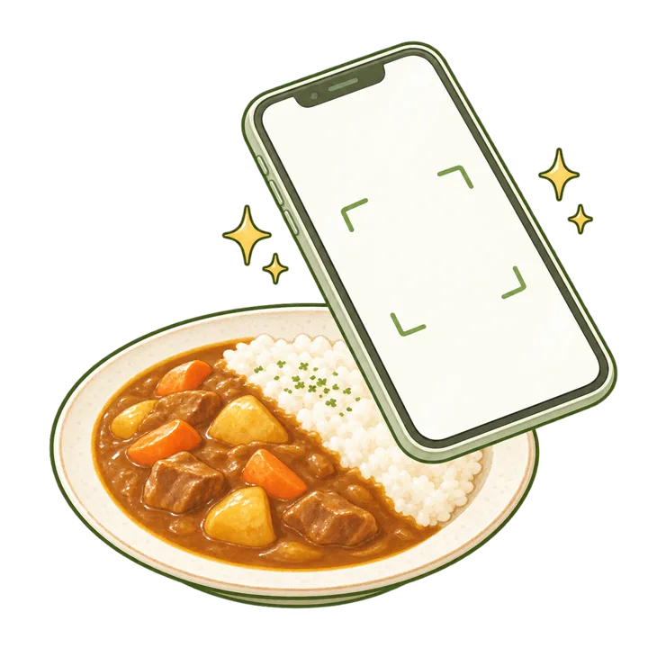
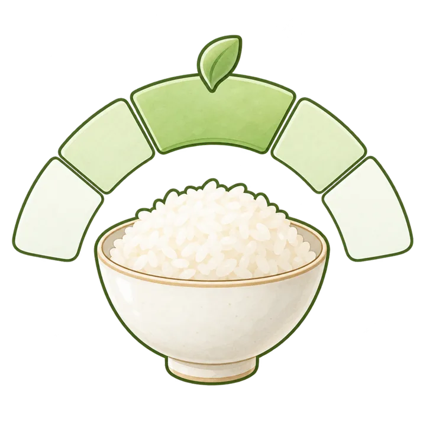
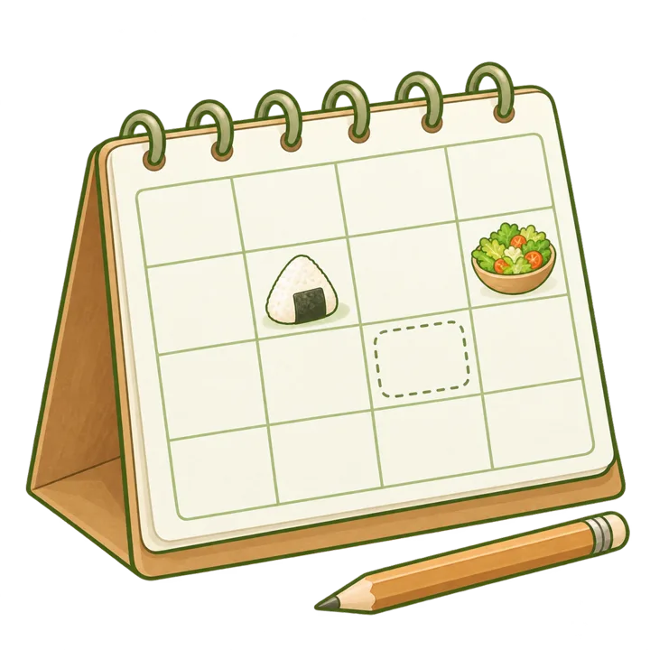
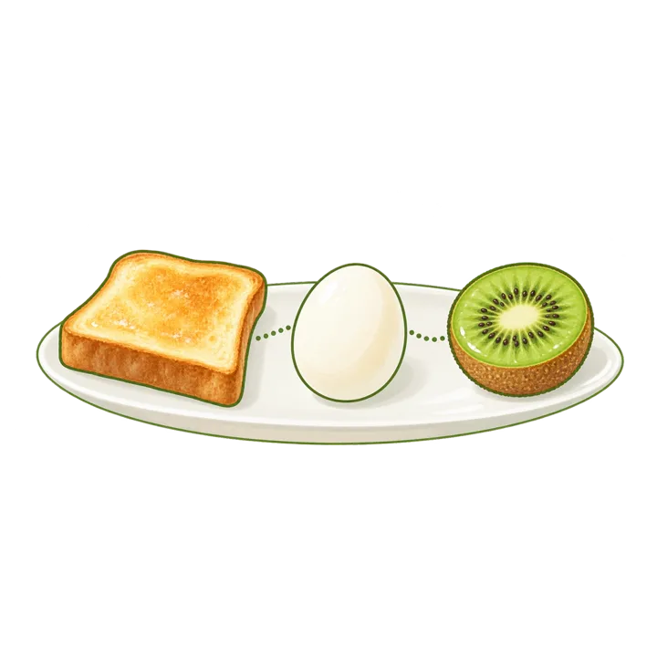
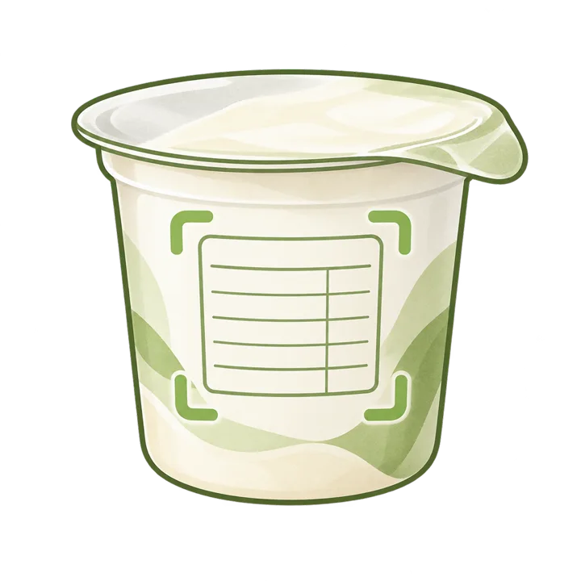
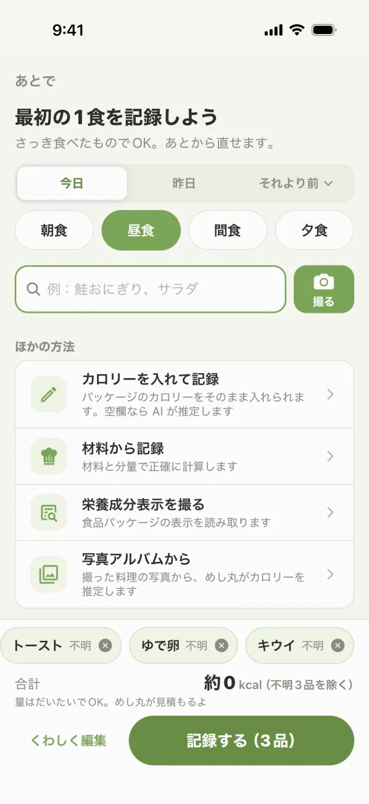
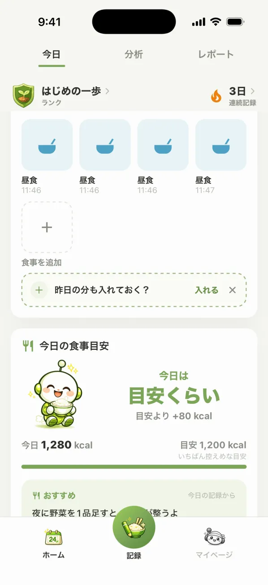
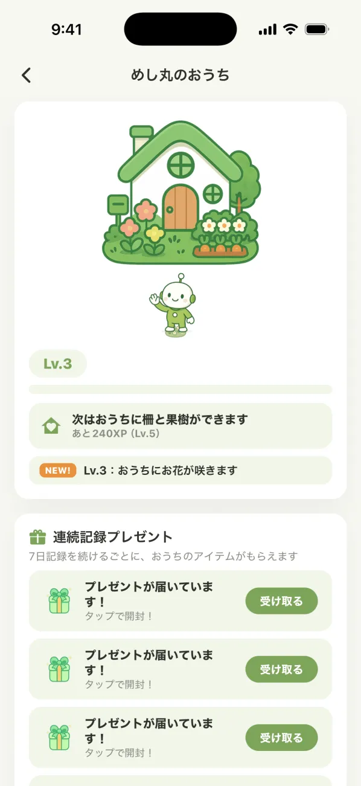
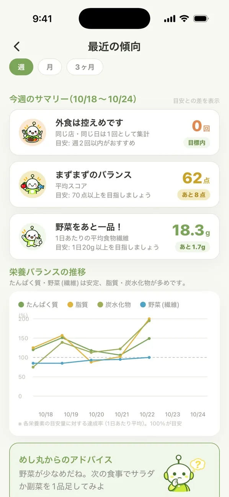

声をかけてほしい時間に
朝・昼・夜から選べます。記録した次の日は、同じころに1回だけ声をかけます。マイページでいつでも止められます。
「鮭おにぎり、サラダ」と書くか、写真を1枚撮るだけ。カロリーと栄養は AI がだいたい出します。量は「だいたい」で大丈夫。続けるほど、自分に合った食べ方が見えてきます。
無料ではじめられます ・ iPhone / Android
はじめの設定は、目的をひとつ選ぶだけ。すぐに記録できます。

食べたものの名前をひとこと書くか、写真を1枚撮ります。

カロリーと栄養を AI がだいたい出して、今日の目安とくらべます。

足りない栄養と、次に足すといい一品を、めし丸が教えます。
辞書にない料理も、名前を入れれば AI がカロリーを見積もります。きちんと量を入れたい日は「材料から記録」もあります。




1日の目安は、あなたの体と目的から出します。少し超えた日は「目安くらい」。多めの日も、数字をそっと見せるだけです。体が1日に使う量までの「無理のない幅」も確かめられます。
毎日ぴったりじゃなくて大丈夫。
まずは、書くことからはじめよう！
がんばりすぎなくていいように。めし丸と、小さな楽しみを用意しています。
朝・昼・夜から選べます。記録した次の日は、同じころに1回だけ声をかけます。マイページでいつでも止められます。
記録するとめし丸のおうちが育ちます。続けると、おうちに置けるプレゼントが届きます。
昨日や先週の分も、30日前まであとから記録できます。連続記録は3日あいても途切れません。
「いまの感じ」をタップで答えると、ミッションやおすすめがあなたに合わせて変わります。
栄養バランスの推移や、外食の回数をグラフで。1日のぶれより、流れが見えてきます。
記録を続けると、ランクが上がります。今月7日記録すると、その月の分析とレポートも見られます。


もっとくわしくふり返りたい人には、月額の PRO があります。
0円
記録とふだんのふり返りは、これで十分です。
500円 / 月（税込）
いつでも解約できます。
大丈夫です。料理名や写真から、めし丸（AI）がおおよそのカロリーと栄養を出します。あとから直すこともできます。きちんと量を入れたい日は「材料から記録」も使えます。
名前を入れて「このまま追加」を押すと、AI がカロリーを見積もって記録に入れます。辞書に入れてほしい食品は、アプリからリクエストもできます。
はい。つけ忘れた日も、30日前まであとから記録できます。連続記録は3日あいても途切れません。
最初の記録のあとに、声をかけてほしい時間（朝・昼・夜）を選べます。選ばなければ届きません。マイページでいつでも止められます。
はい。食事の記録、今日のスコア、栄養バランス、AI のひとこと、週の傾向、直近30日の記録、体重の記録は無料です。今月7日記録すると、その月の分析と月次レポートも無料で見られます。3ヶ月の傾向、過去の月次レポート、全期間の記録、AI のふり返り、体重の推移グラフと週ごとのふり返りは、月額の PRO でご利用いただけます。
PRO は月額500円（税込）の自動更新サブスクリプションです。解約はいつでもでき、App Store または Google Play の購読の管理から行えます。
どちらでも使えます。App Store と Google Play からダウンロードしてください。
記録はアカウントごとに保護して保存しています。くわしくはプライバシーポリシーをご覧ください。